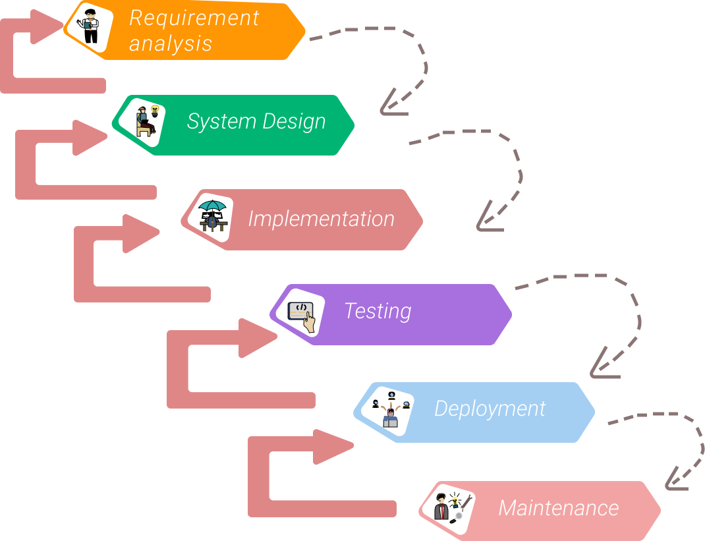
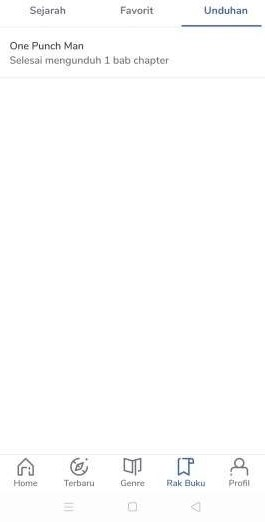

Pengembangan Aplikasi Baca Komik.
1. Requeriment
| Admin | Users |
|---|---|
|
* admin dapat mengelola database Komik yang disediakan * admin dapat mengelola/menjaga data-data akun user * admin memiliki wewenang untuk melakukan update data terkait komik * setiap data yang masuk menjadi tanggung jawab admin * admin dapat melakukan maintenance |
* users dapat melakukan login dan logout akun menggunakan gmail atau facebook * users dapat memilih komik sesuai selera * users dapat menyimpan komik yang disukai ke dalam komik favorit * users dapat mengunduh komik supaya dibaca secara offline * users dapat melihat riwayat baca terakhir kali |
2. Desain Sistem
- Desain Sistem
- Desain Database
- Desain Interface

3. Implementasi
Pada pembuatan software ini, menggunakan bahasa pemrograman Kotlin dengan software Desktop Android Studio
4. Testing
Pada pengujian sistem ini, menggunakan metode black box yaitu pengujian yang dilakukan pada tampilan program apakah program dapat berjalan dengan baik sesuai yang diinginkan.
5. Deployment
setelah tahap ke.4 selesai, maka software ini akan disebarluaskan untuk di implementasikan pada perangkat users secara umum
5. Maintenance
Pada tahap ini, pengembang dapat melakukan evaluasi dan memperbaiki software jauh lebih baik lagi